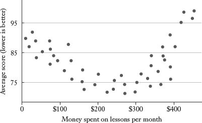

Here is one of the most important things to remember when doing research that involves regression analysis: Try not to kill anyone. You can even put a little Post-it note on your computer monitor: “Do not kill people with your research.” Because some very smart people have inadvertently violated that rule.
Beginning in the 1990s, the medical establishment coalesced around the idea that older women should take estrogen supplements to protect against heart disease, osteoporosis, and other conditions associated with menopause.1 By 2001, some 15 million women were being prescribed estrogen in the belief that it would make them healthier. Why? Because research at the time—using the basic methodology laid out in the last chapter—suggested this was a sensible medical strategy. In particular, a longitudinal study of 122,000 women (the Nurses’ Health Study) found a negative association between estrogen supplements and heart attacks. Women taking estrogen had one-third as many heart attacks as women who were not taking estrogen. This was not a couple of teenagers using dad’s computer to check out pornography and run regression equations. The Nurses’ Health Study is run by the Harvard Medical School and the Harvard School of Public Health.
Meanwhile, scientists and physicians offered a medical theory for why hormone supplements might be beneficial for female health. A woman’s ovaries produce less estrogen as she ages; if estrogen is important to the body, then making up for this deficit in old age could be protective of a woman’s long-term health. Hence the name of the treatment: hormone replacement therapy. Some researchers even began to suggest that older men should receive an estrogen boost.2
And then, while millions of women were being prescribed hormone replacement therapy, estrogen was subjected to the most rigorous form of scientific scrutiny: clinical trials. Rather than searching a large data set like the Nurses’ Health Study for statistical associations that may or may not be causal, a clinical trial consists of a controlled experiment. One sample is given a treatment, such as hormone replacement; another sample is given a placebo. Clinical trials showed that women taking estrogen had a higher incidence of heart disease, stroke, blood clots, breast cancer, and other adverse health outcomes. Estrogen supplements did have some benefits, but those benefits were far outweighed by other risks. Beginning in 2002, doctors were advised not to prescribe estrogen for their aging female patients. The New York Times Magazine asked a delicate but socially significant question: How many women died prematurely or suffered strokes or breast cancer because they were taking a pill that their doctors had prescribed to keep them healthy?
The answer: “A reasonable estimate would be tens of thousands.”3
Regression analysis is the hydrogen bomb of the statistics arsenal. Every person with a personal computer and a large data set can be a researcher in his or her own home or cubicle. What could possibly go wrong? All kinds of things. Regression analysis provides precise answers to complicated questions. These answers may or may not be accurate. In the wrong hands, regression analysis will yield results that are misleading or just plain wrong. And, as the estrogen example illustrates, even in the right hands this powerful statistical tool can send us speeding dangerously in the wrong direction. The balance of this chapter will explain the most common regression “mistakes.” I put “mistakes” in quotation marks, because, as with all other kinds of statistical analysis, clever people can knowingly exploit these methodological points to nefarious ends.
Here is a “Top Seven” list of the most common abuses of an otherwise extraordinary tool.
Using regression to analyze a nonlinear relationship.* Have you ever read the warning label on a hair dryer—the part that cautions, Do Not Use in the Bath Tub? And you think to yourself, “What kind of moron uses a hair dryer in the bath tub?” It’s an electrical appliance; you don’t use electrical appliances around water. They’re not designed for that. If regression analysis had a similar warning label, it would say, Do Not Use When There Is Not a Linear Association between the Variables That You Are Analyzing. Remember, a regression coefficient describes the slope of the “line of best fit” for the data; a line that is not straight will have a different slope in different places. As an example, consider the following hypothetical relationship between the number of golf lessons that I take during a month (an explanatory variable) and my average score for an eighteen-hole round during that month (the dependent variable). As you can see from the scatter plot, there is no consistent linear relationship.
Effect of Golf Lessons on Score

There is a pattern, but it cannot be easily described with a single straight line. The first few golf lessons appear to bring my score down rapidly. There is a negative association between lessons and my scores for this stretch; the slope is negative. More lessons yield lower scores (which is good in golf).
But then when I reach the point where I’m spending between $200 and $300 a month on lessons, the lessons do not seem to have much effect at all. There is no clear association over this stretch between additional instruction and my golf scores; the slope is zero.
And finally, the lessons appear to become counterproductive. Once I’m spending $300 a month on instruction, incremental lessons are associated with higher scores; the slope is positive over this stretch. (I’ll discuss the distinct possibility that the bad golf may be causing the lessons, rather than the other way around, later in the chapter.)
The most important point here is that we cannot accurately summarize the relationship between lessons and scores with a single coefficient. The best interpretation of the pattern described above is that golf lessons have several different linear relationships with my scores. You can see that; a statistics package will not. If you feed these data into a regression equation, the computer will give you a single coefficient. That coefficient will not accurately reflect the true relationship between the variables of interest. The results you get will be the statistical equivalent of using a hair dryer in the bath tub.
Regression analysis is meant to be used when the relationship between variables is linear. A textbook or an advanced course in statistics will walk you through the other core assumptions underlying regression analysis. As with any other tool, the further one deviates from its intended use, the less effective, or even potentially dangerous, it’s going to be.
Correlation does not equal causation. Regression analysis can only demonstrate an association between two variables. As I have mentioned before, we cannot prove with statistics alone that a change in one variable is causing a change in the other. In fact, a sloppy regression equation can produce a large and statistically significant association between two variables that have nothing to do with one another. Suppose we were searching for potential causes for the rising rate of autism in the United States over the last two decades. Our dependent variable—the outcome we are seeking to explain—would be some measure of the incidence of the autism by year, such as the number of diagnosed cases for every 1,000 children of a certain age. If we were to include annual per capita income in China as an explanatory variable, we would almost certainly find a positive and statistically significant association between rising incomes in China and rising autism rates in the U.S. over the past twenty years.
Why? Because they both have been rising sharply over the same period. Yet I highly doubt that a sharp recession in China would reduce the autism rate in the United States. (To be fair, if I observed a strong relationship between rapid economic growth in China and autism rates in China alone, I might begin to search for some environmental factor related to economic growth, such as industrial pollution, that might explain the association.)
The kind of false association between two variables that I have just illustrated is just one example of a more general phenomenon known as spurious causation. There are several other ways in which an association between A and B can be wrongly interpreted.
Reverse causality. A statistical association between A and B does not prove that A causes B. In fact, it’s entirely plausible that B is causing A. I alluded to this possibility earlier in the golf lesson example. Suppose that when I build a complex model to explain my golf scores, the variable for golf lessons is consistently associated with worse scores. The more lessons I take, the worse I shoot! One explanation is that I have a really, really bad golf instructor. A more plausible explanation is that I tend to take more lessons when I’m playing poorly; bad golf is causing more lessons, not the other way around. (There are some simple methodological fixes to a problem of this nature. For example, I might include golf lessons in one month as an explanatory variable for golf scores in the next month.)
As noted earlier in the chapter, causality may go in both directions. Suppose you do some research demonstrating that states that spend more money on K–12 education have higher rates of economic growth than states that spend less on K–12 education. A positive and significant association between these two variables does not provide any insight into which direction the relationship happens to run. Investments in K–12 education could cause economic growth. On the other hand, states that have strong economies can afford to spend more on K–12 education, so the strong economy could be causing the education spending. Or, education spending could boost economic growth, which makes possible additional education spending—the causality could be going in both ways.
The point is that we should not use explanatory variables that might be affected by the outcome that we are trying to explain, or else the results will become hopelessly tangled. For example, it would be inappropriate to use the unemployment rate in a regression equation explaining GDP growth, since unemployment is clearly affected by the rate of GDP growth. Or, to think of it another way, a regression analysis finding that lowering unemployment will boost GDP growth is a silly and meaningless finding, since boosting GDP growth is usually required in order to reduce unemployment.
We should have reason to believe that our explanatory variables affect the dependent variable, and not the other way around.
Omitted variable bias. You should be skeptical the next time you see a huge headline proclaiming, “Golfers More Prone to Heart Disease, Cancer, and Arthritis!” I would not be surprised if golfers have a higher incidence of all of those diseases than nongolfers; I also suspect that golf is probably good for your health because it provides socialization and modest exercise. How can I reconcile those two statements? Very easily. Any study that attempts to measure the effects of playing golf on health must control properly for age. In general, people play more golf when they get older, particularly in retirement. Any analysis that leaves out age as an explanatory variable is going to miss the fact that golfers, on average, will be older than nongolfers. Golf isn’t killing people; old age is killing people, and they happen to enjoy playing golf while it does. I suspect that when age is inserted into the regression analysis as a control variable, we will get a different outcome. Among people who are the same age, golf may be mildly preventive of serious illnesses. That’s a pretty big difference.
In this example, age is an important “omitted variable.” When we leave age out of a regression equation explaining heart disease or some other adverse health outcome, the “playing golf” variable takes on two explanatory roles rather than just one. It tells us the effect of playing golf on heart disease, and it tells us the effect of being old on heart disease (since golfers tend to be older than the rest of the population). In the statistics lingo, we would say that the golf variable is “picking up” the effect of age. The problem is that these two effects are comingled. At best, our results are a jumbled mess. At worst, we wrongly assume that golf is bad for your health, when in fact the opposite is likely to be true.
Regression results will be misleading and inaccurate if the regression equation leaves out an important explanatory variable, particularly if other variables in the equation “pick up” that effect. Suppose we are trying to explain school quality. This is an important outcome to understand: What makes good schools? Our dependent variable—the quantifiable measure of quality—would most likely be test scores. We would almost certainly examine school spending as one explanatory variable in hopes of quantifying the relationship between spending and test scores. Do schools that spend more get better results? If school spending were the only explanatory variable, I have no doubt that we would find a large and statistically significant relationship between spending and test scores. Yet that finding, and the implication that we can spend our way to better schools, is deeply flawed.
There are many potentially significant omitted variables here, but the crucial one is parental education. Well-educated families tend to live in affluent areas that spend a lot of money on their schools; such families also tend to have children who score well on tests (and poor families are more likely to have students who struggle). If we do not have some measure of the socioeconomic status of the student body as a control variable, our regression results will probably show a large positive association between school spending and test scores—when in fact, those results may be a function of the kind of students who are walking in the school door, not the money that is being spent in the building.
I remember a college professor’s pointing out that SAT scores are highly correlated with the number of cars that a family owns. He insinuated that the SAT was therefore an unfair and inappropriate tool for college admissions. The SAT has its flaws but the correlation between scores and family cars is not the one that concerns me most. I do not worry much that rich families can get their kids into college by purchasing three extra automobiles. The number of cars in a family’s garage is a proxy for their income, education, and other measures of socioeconomic status. The fact that wealthy kids do better on the SAT than poor kids is not news. (As noted earlier, the mean SAT critical reading score for students from families with a household income over $200,000 is 134 points higher than the mean score for students in households with income below $20,000.)4 The bigger concern should be whether or not the SAT is “coachable.” How much can students improve their scores by taking private SAT prep classes? Wealthy families clearly are better able to send their children to test prep classes. Any causal improvement between these classes and SAT scores would favor students from wealthy families relative to more disadvantaged students of equal abilities (who presumably also could have raised their scores with a prep class but never had that opportunity).
Highly correlated explanatory variables (multicollinearity). If a regression equation includes two or more explanatory variables that are highly correlated with each other, the analysis will not necessarily be able to discern the true relationship between each of those variables and the outcome that we are trying to explain. An example will make this clearer. Assume we are trying to gauge the effect of illegal drug use on SAT scores. Specifically, we have data on whether the participants in our study have ever used cocaine and also on whether they have ever used heroin. (We would presumably have many other control variables as well.) What is the impact of cocaine use on SAT scores, holding other factors constant, including heroin use? And what is the impact of heroin use on SAT scores, controlling for cocaine use and other factors?
The coefficients on heroin and cocaine use might not actually be able to tell us that. The methodological challenge is that people who have used heroin have likely also used cocaine. If we put both variables in the equation, we will have very few individuals who have used one drug but not the other, which leaves us very little variation in the data with which to calculate their independent effects. Think back for a moment to the mental imagery used to explain regression analysis in the last chapter. We divide our data sample into different “rooms” in which each observation is identical except for one variable, which then allows us to isolate the effect of that variable while controlling for other potential confounding factors. We may have 692 individuals in our sample who have used both cocaine and heroin. However, we may have only 3 individuals who have used cocaine but not heroin and 2 individuals who have used heroin and not cocaine. Any inference about the independent effect of just one drug or the other is going to be based on these tiny samples.
We are unlikely to get meaningful coefficients on either the cocaine or the heroin variable; we may also obscure the larger and more important relationship between SAT scores and using either one of these drugs. When two explanatory variables are highly correlated, researchers will usually use one or the other in the regression equation, or they may create some kind of composite variable, such as “used cocaine or heroin.” For example, when researchers want to control for a student’s overall socioeconomic background, they may include variables for both “mother’s education” and “father’s education,” since this inclusion provides important insight into the educational background of the household. However, if the goal of the regression analysis is to isolate the effect of either a mother’s or a father’s education, then putting both variables into the equation is more likely to confuse the issue than to clarify it. The correlation between a husband’s and a wife’s educational attainments is so high that we cannot depend on regression analysis to give us coefficients that meaningfully isolate the effect of either parent’s education (just as it is hard to separate the impact of cocaine use from the impact of heroin use).
Extrapolating beyond the data. Regression analysis, like all forms of statistical inference, is designed to offer us insights into the world around us. We seek patterns that will hold true for the larger population. However, our results are valid only for a population that is similar to the sample on which the analysis has been done. In the last chapter, I created a regression equation to predict weight based on a number of independent variables. The R2 of my final model was .29, which means that it did a decent job of explaining the variation in weight for a large sample of individuals—all of whom happened to be adults.
So what happens if we use our regression equation to predict the likely weight of a newborn? Let’s try it. My daughter was 21 inches when she was born. We’ll say that her age at birth was zero; she had no education and did not exercise. She was white and female. The regression equation based on the Changing Lives data predicts that her weight at birth should have been negative 19.6 pounds. (She weighed 8½ pounds.)
The authors of one of the Whitehall studies referred to in the last chapter were strikingly explicit in drawing their narrow conclusion: “Low control in the work environment is associated with an increased risk of future coronary heart disease among men and women employed in government offices”5 (italics added).
Data mining (too many variables). If omitting important variables is a potential problem, then presumably adding as many explanatory variables as possible to a regression equation must be the solution. Nope.
Your results can be compromised if you include too many variables, particularly extraneous explanatory variables with no theoretical justification. For example, one should not design a research strategy built around the following premise: Since we don’t know what causes autism, we should put as many potential explanatory variables as possible in the regression equation just to see what might turn up as statistically significant; then maybe we’ll get some answers. If you put enough junk variables in a regression equation, one of them is bound to meet the threshold for statistical significance just by chance. The further danger is that junk variables are not always easily recognized as such. Clever researchers can always build a theory after the fact for why some curious variable that is really just nonsense turns up as statistically significant.
To make this point, I often do the same coin flipping exercise that I explained during the probability discussion. In a class of forty students or so, I’ll have each student flip a coin. Any student who flips tails is eliminated; the rest flip again. In the second round, those who flip tails are once again eliminated. I continue the rounds of flipping until one student has flipped five or six heads in a row. You may recall some of the silly follow-up questions: “What’s your secret? Is it in the wrist? Can you teach us to flip heads all the time? Maybe it’s that Harvard sweatshirt you’re wearing.”
Obviously the string of heads is just luck; the students have all watched it happen. However, that is not necessarily how the result could or would be interpreted in a scientific context. The probability of flipping five heads in a row is 1/32, or .03. This is comfortably below the .05 threshold we typically use to reject a null hypothesis. Our null hypothesis in this case is that the student has no special talent for flipping heads; the lucky string of heads (which is bound to happen for at least one student when I start with a large group) allows us to reject the null hypothesis and adopt the alternative hypothesis: This student has a special ability to flip heads. After he has achieved this impressive feat, we can study him for clues about his flipping success—his flipping form, his athletic training, his extraordinary concentration while the coin is in the air, and so on. And it is all nonsense.
This phenomenon can plague even legitimate research. The accepted convention is to reject a null hypothesis when we observe something that would happen by chance only 1 in 20 times or less if the null hypothesis were true. Of course, if we conduct 20 studies, or if we include 20 junk variables in a single regression equation, then on average we will get 1 bogus statistically significant finding. The New York Times Magazine captured this tension wonderfully in a quotation from Richard Peto, a medical statistician and epidemiologist: “Epidemiology is so beautiful and provides such an important perspective on human life and death, but an incredible amount of rubbish is published.”6
Even the results of clinical trials, which are usually randomized experiments and therefore the gold standard of medical research, should be viewed with some skepticism. In 2011, the Wall Street Journal ran a front-page story on what it described as one of the “dirty little secrets” of medical research: “Most results, including those that appear in top-flight peer-reviewed journals, can’t be reproduced.”7 (A peer-reviewed journal is a publication in which studies and articles are reviewed for methodological soundness by other experts in the same field before being approved for publication; such publications are considered to be the gatekeepers for academic research.) One reason for this “dirty little secret” is the positive publication bias described in Chapter 7. If researchers and medical journals pay attention to positive findings and ignore negative findings, then they may well publish the one study that finds a drug effective and ignore the nineteen in which it has no effect. Some clinical trials may also have small samples (such as for a rare diseases), which magnifies the chances that random variation in the data will get more attention than it deserves. On top of that, researchers may have some conscious or unconscious bias, either because of a strongly held prior belief or because a positive finding would be better for their career. (No one ever gets rich or famous by proving what doesn’t cure cancer.)
For all of these reasons, a shocking amount of expert research turns out to be wrong. John Ioannidis, a Greek doctor and epidemiologist, examined forty-nine studies published in three prominent medical journals.8 Each study had been cited in the medical literature at least a thousand times. Yet roughly one-third of the research was subsequently refuted by later work. (For example, some of the studies he examined promoted estrogen replacement therapy.) Dr. Ioannidis estimates that roughly half of the scientific papers published will eventually turn out to be wrong.9 His research was published in the Journal of the American Medical Association, one of the journals in which the articles he studied had appeared. This does create a certain mind-bending irony: If Dr. Ioannidis’s research is correct, then there is a good chance that his research is wrong.
Regression analysis is still an awesome statistical tool. (Okay, perhaps my description of it as a “miracle elixir” in the last chapter was a little hyperbolic.) Regression analysis enables us to find key patterns in large data sets, and those patterns are often the key to important research in medicine and the social sciences. Statistics gives us objective standards for evaluating these patterns. When used properly, regression analysis is an important part of the scientific method. Consider this chapter to be the mandatory warning label.
All of the assorted specific warnings on that label can be boiled down to two key lessons. First, designing a good regression equation—figuring out what variables should be examined and where the data should come from—is more important than the underlying statistical calculations. This process is referred to as estimating the equation, or specifying a good regression equation. The best researchers are the ones who can think logically about what variables ought to be included in a regression equation, what might be missing, and how the eventual results can and should be interpreted.
Second, like most other statistical inference, regression analysis builds only a circumstantial case. An association between two variables is like a fingerprint at the scene of the crime. It points us in the right direction, but it’s rarely enough to convict. (And sometimes a fingerprint at the scene of a crime doesn’t belong to the perpetrator.) Any regression analysis needs a theoretical underpinning: Why are the explanatory variables in the equation? What phenomena from other disciplines can explain the observed results? For instance, why do we think that wearing purple shoes would boost performance on the math portion of the SAT or that eating popcorn can help prevent prostate cancer? The results need to be replicated, or at least consistent with other findings.
Even a miracle elixir won’t work when not taken as directed.
* There are more sophisticated methods that can be used to adapt regression analysis for use with nonlinear data. Before using those tools, however, you need to appreciate why using the standard ordinary least squares approach with nonlinear data will give you a meaningless result.